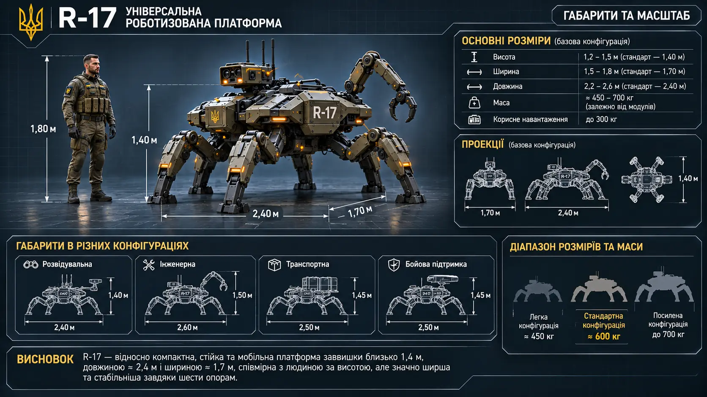

Центральний корпус
Низький захищений силовий каркас із розподіленим живленням, обчислювальним блоком, системами зв'язку та сенсорами. Функціональні секції ізольовані, щоб локальне пошкодження не виводило з ладу всю машину.

Універсальна модульна роботизована платформа. Шестинога машина підтримки, створена для роботи в бойових умовах, на складному рельєфі та в місцях, де присутність людини надто ризикована.
R-17 — не механічний піхотинець і не заміна бійця. Це універсальна роботизована система підтримки підрозділу. Її основна перевага — спільне базове шасі, яке можна швидко перебудувати під конкретне завдання за допомогою змінних кінцівок, інструментів, сенсорів і вантажних модулів.
Низький броньований корпус і шість рухомих опор забезпечують стійкість та можливість рухатися серед уламків, завалів, траншей і пошкоджених споруд. Платформа перерозподіляє навантаження між опорами й може продовжувати обмежений рух у разі відмови окремої кінцівки.
Низький захищений силовий каркас із розподіленим живленням, обчислювальним блоком, системами зв'язку та сенсорами. Функціональні секції ізольовані, щоб локальне пошкодження не виводило з ладу всю машину.
Точки кріплення підтримують різні кінцівки й обладнання. Базова конфігурація має шість ходових опор; частину з них можна замінювати маніпуляторами або спеціалізованими робочими модулями.
Акумуляторні блоки розподілені по корпусу. Сегментована схема спрощує балансування, обслуговування та ізоляцію пошкоджених елементів.
Локальна обчислювальна система обробляє дані сенсорів, стабілізує рух, будує просторову модель оточення та підтримує мережеву взаємодію. Базові функції не залежать виключно від постійного зв'язку із зовнішньою мережею.

Оптичні й тепловізійні сенсори, огляд периметра, виявлення руху, побудова тривимірної карти, спостереження за маршрутами та передавання інформації підрозділу.
Маніпулятори й змінний інструмент для розчищення проходів, переміщення уламків, огляду пошкоджених конструкцій, допоміжного ремонту та перевірки небезпечних ділянок.
Перевезення спорядження, боєкомплекту, акумуляторів, медичних засобів і вантажів. У відповідній конфігурації — допомога в евакуації поранених із небезпечної зони.
Додаткове спостереження, ретрансляція зв'язку, доставка спорядження, сенсорне прикриття та підтримка інженерних груп. R-17 працює як частина підрозділу, а не як самостійний носій рішень про застосування летальної сили.
Платформа виконує визначене завдання: рухається маршрутом, спостерігає, картографує місцевість, перевозить вантаж або повертається до точки обслуговування.
Оператор задає напрямок або намір, а бортова система самостійно розраховує рух, утримує рівновагу, обходить перешкоди й контролює навантаження.
Боєць може отримувати сенсорну інформацію платформи та спрямовувати її рух або маніпулятори через браслет мислезв'язку. R-17 стає додатковою точкою сприйняття й набором робочих кінцівок оператора.
Обмін даними з бійцями, іншими роботами та командними системами. За потреби платформа виконує роль локального ретранслятора або додаткового сенсорного вузла.
Сегментований корпус, резервування живлення, самодіагностика та ізоляція несправностей дають змогу зберігати частину функцій після пошкоджень. Проте R-17 не є невразливим: пошкодження приводів, сенсорів, корпусу або каналів зв'язку знижує його можливості. Складний рельєф, надмірне навантаження та дефіцит енергії можуть змусити платформу перейти в обмежений режим або припинити завдання.
Додаткові сфери застосування: пошук людей, контроль небезпечних зон, вимірювання радіаційних і хімічних показників, огляд підземних приміщень, перевірка інфраструктури та допомога в обслуговуванні інших роботизованих систем.
Робочі значення для базової концепції. Остаточні показники залежать від складу модулів, рівня захисту та джерел живлення.
| ПАРАМЕТР | ЗНАЧЕННЯ |
|---|---|
| Висота | 1,2–1,5 м; стандартно близько 1,4 м |
| Довжина | близько 2,4 м |
| Ширина | 1,5–1,8 м; стандартно близько 1,7 м |
| Маса | орієнтовно 450–700 кг залежно від конфігурації |
| Корисне навантаження | до 300 кг — попередня оцінка |
| Ходова схема | шість рухомих опор |

На Нульовому плані роботи вже давно є частиною технологічного середовища. Існують транспортні, ремонтні, сервісні, дослідницькі та інші спеціалізовані системи. Кожна створювалася для свого кола завдань і має відповідну конструкцію.
Однак ці машини не були пристосовані до бойових умов і не мали єдиної модульної архітектури, яка дозволяла б швидко змінювати призначення платформи. Для нового завдання зазвичай потрібна інша спеціалізована модель.
R-17 — відповідь на цю прогалину. Його новизна не в самому факті існування робота, а в поєднанні бойової адаптації, універсального шасі, змінних кінцівок, єдиної системи керування та мережевої взаємодії.